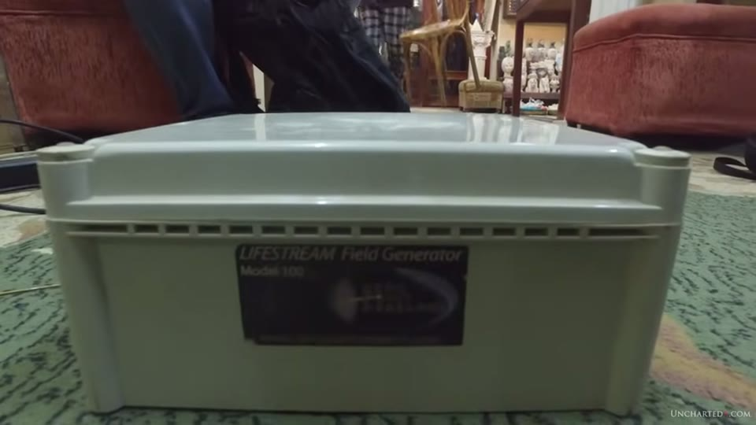

UnchartedX
500,000 volts through megalithic stone? An investigation into the possible with UnchartedX!
Ben van Kerkwyk · 28 min · watch on YouTube · summarised 2026-10-02
Twenty-eight minutes, of which about six are a demonstration filmed in Egypt in 2016 and the rest is the presenter talking about it. He states his own position on it repeatedly and in those terms. "I'm actually just trying to start a discussion on the stuff. I would love it if somebody that was smarter than me could tell me exactly what's going on here" 26:03.
The framing is stated first 01:31–03:04: that the usual assumption is of "hard-working primitive ancient civilizations who only ever built tombs or temples or symbolic ritual and religious structures", and that the possibility worth testing is building for function.
The demonstration
Filmed with Yousef Awyan, an expert guide and stonemason, and a second man identified in the narration only as his brother. The device belongs to a friend of theirs and is run over stone samples while the three talk.
What is actually on screen is worth stating, because the footage does not match the framing. The demonstration is indoors on a patterned carpet, in a room with sofas, glass cabinets and shelves of carved alabaster heads, busts and vessels — a stoneworking shop or showroom, not a megalithic site. The samples are small machine-cut stone discs and rings with central holes, a few inches across, stacked on a white column on top of the device like washers on a spindle. None of them is a piece of a monument.
The device is a white plastic enclosure with a ventilated front and a label legible in frame: "LIFESTREAM Field Generator, Model 100".
The results as the participants state them 04:00–09:25:
| sample | what is said |
|---|---|
| limestone | "the most powerful stone"; "almost like a stronger reaction" |
| granite | "the granite still almost nothing" |
| alabaster | "not conductive" |
| marble | "also marble is not conduct—" |
| gold-plated limestone | "the induction in the gold plated piece was the same as limestone" |
And the observation the whole video rests on, spoken by Ben over a granite ring with a wire held against it: "It's making a little tiny noise. Is that possibly an explanation for why they use so many different types of stones, to create the architecture?" The visible effect is a faint white discharge at the rim of the disc's central hole. No meter is used, no reading is taken, and no number is produced anywhere in the demonstration.
Yousef's argument from it 05:51–09:25: "there is no doubt that this combination of stones was specifically chosen to accomplish something. Nobody just goes… hundreds of kilometres far just to build something symbolic", and "I've always asked, why wouldn't they just use smaller blocks or smaller pieces of granite to do the floor as well?" He also states the limit himself: "there is no conclusion to this, because we actually don't know what we are researching for."

Where the experiment was done, and what was put in front of the device.


The test objects, and the whole of the observed effect.
What the presenter does with it
Most of this section is qualification of what has just been shown 10:06–13:42.
On the device: the Model 100 is the smallest in a range, and the by-line claim of 500,000 volts of radiant pulsed energy is a "term that means much at all to me" — his words are that it does not. "Trying to track down specifics on this device will lead you down something of an Internet rabbit hole into the claimed healing powers of crystals, mystical massages and all sorts of strange pseudo-scientific videos." The YouTube search he films returns a promotional clip titled "LifeStream Generator Session" with 254 views on screen.
On the sceptics: "there's only a little bit of discussion on this particular device that I've been able to find, and in particular some on a skeptic website." He puts the page on screen. It is Metabunk, and the thread is legible — "Brooks Agnew's Cloud Chamber HAARP Experiment on Joe Rogan's Question Everything", posted by Mick West, 1 August 2013, filed under the forum section "Science and Pseudoscience". He reports that the televised experiment's "results were very much indeterminate", and adds, unprompted, that "there does seem to be some physiotherapy applications for this type of technology in the treatment of osteoarthritis" and that he is "really not trying to discredit anything here".
On his own reading: electromagnetic induction "is just electricity", the principle behind the industrial revolution; he links a university lecture on Faraday's law in the description and compares the demonstration to a Van de Graaff generator. The speculation he reaches for is semiconductors — that n-type and p-type behaviour under current is the basis of logic circuits, and that different stones behaving differently is the kind of difference that might matter. He labels it as he makes it: "clearly the relationship between this and megalithic stone is speculative and I'm not claiming anything here other than the fact that this is a very interesting experiment and it seems to be worthy of some further study."

The instrument the claim runs on, and what it calls itself.

The critical source, shown rather than paraphrased.
The digression about perspective
A third of the video is an argument about how knowledge changes what seems possible 13:42–19:20, and it is carried entirely by a modern example rather than an ancient one. Nikola Tesla's Wardenclyffe tower is named; a company he calls Viziv Technologies is said to have built a similar tower at a Texas test site and to be marketing wireless power delivery without line of sight.
The physics claim attached to it is that there is more than one theory of electromagnetic wave propagation: the Hertzian one everything currently runs on, and Zenneck surface wave theory, which he describes as using the interface between the ground and the air — "think of a balloon that is inflated around the entire planet" — to send power or signal anywhere on the surface without wires, radiation or a grid to be destroyed. His point is not about antiquity at all: "if you had talked about this idea before Zenneck surface waves had proven out, this would be considered complete science fiction… that's exactly the type of thinking that I think we need."
The stone combinations on site
The section filmed at the monuments 19:20–25:30. His argument is that mixed stone is not accidental, because the quarries for the different stones are in different places and the blocks had to be carried a long way.
At Abusir, rows of basalt casing limestone, with an effect he points at: parts of the basalt "starting to get all [crumbly] and actually peel away in some sections", and specifically "the bits of the basalt that have been facing or right next to the limestone". The footage shows a hand on a dark basalt block whose upper surface is exfoliating in thin sheets. The same site's sub-floor stonework is the subject of the stone cutting entry.
At the Valley Temple, the limestone core cased in granite, with erosion showing on the limestone behind the casing. The erosion in that casing relationship is examined in detail in the erosion study.
Yousef's contribution here is a dating argument, and it is made against someone on his own side. The subtitle gives the name: "I have a different opinion than what Dr Robert Schoch believes, and of course I respect his knowledge, he's much more knowledgeable than me in geology." Schoch's reading, as given, is that the limestone walls are much older than the granite, which was added as a renovation after the limestone had deteriorated. Yousef's objection is a stonemason's: the limestone blocks are shaped three-dimensionally so the granite interlocks into them, which means the granite was planned when the limestone was cut, not fitted later. And he adds that "we can find the same erosion in the pockets that were carved to interlock the granite" — so on his reading the erosion postdates the cutting rather than preceding the casing.

Where the interview was filmed, and the name the subtitle supplies.
He then offers his own speculation and flags it as such: "of course this is the imagination, there is no really relevant facts to this" — that if limestone conducted induced currents, that might itself be what deteriorated it and made it look older. He adds that the crumbling basalt faces are the inner ones, not the sun-facing ones.


The decay the speculation is attached to.

The second stone combination, as it stands.
Whether that granite is original or a later repair matters elsewhere too. The Sphinx Temple entry treats the casing of its own structure as part of the original design, following Selim Hassan, and the erosion study's whole table is built on which megalithic structures at Giza were cased and which were not.
What you can check yourself
- The device is a commercial product with a model number — "LIFESTREAM Field Generator, Model 100" is on the label in frame, and its marketing claim of 500,000 volts of radiant pulsed energy is quoted from its own by-line.
- The sceptical source is named and shown: the Metabunk thread on Brooks Agnew's cloud-chamber experiment, started by Mick West on 1 August 2013, in that site's "Science and Pseudoscience" section.
- Zenneck surface waves and Wardenclyffe are both published subjects with a literature of their own, independent of anything in this video.
- Mixed stone at Abusir and the Valley Temple is visible on site: basalt against limestone at one, limestone core against granite casing at the other.
- The interlocking shaping Yousef describes — limestone cut in three dimensions to receive granite — is a claim about block geometry that a visitor can look at directly.
- The quarry distances for granite (Aswan) and basalt against the local Giza limestone are published figures.
What the video does not settle
- Nothing is measured. The entire result is visual and audible: a faint discharge at the rim of a disc and "a little tiny noise". No voltmeter, ammeter, field meter or oscilloscope appears at any point, no reading is given for any sample, and the comparisons between stones are made by eye and ear in a single sitting.
- The samples are not the subject of the claim. They are small machine-cut discs and rings with central holes, from a stoneworking showroom, and the conclusion drawn from them is about hundred-tonne blocks in standing monuments. Nothing establishes the discs' provenance, composition, moisture content or surface finish.
- The setting is a furnished room, not a site. The narration describes "this experiment that we did in Giza"; what is on screen is a carpet, sofas and shelves of carved souvenir stone.
- There is no control. No sample is tested twice, no non-stone object is tested for comparison, and the geometry — which disc sits where in the stack, where the probe touches — changes between tests.
- The discharge appears at an edge. In the clearest frame the visible effect is at the rim of the central hole, which the video does not remark on and does not vary.
- The semiconductor comparison is offered and withdrawn in the same breath. No property shared between a transistor and a block of limestone is identified.
- The perspective argument is about modern technology throughout. Tesla, Viziv and Zenneck waves establish that understanding changes; nothing in that section is evidence about antiquity, and the video does not claim it is.
- Yousef's erosion speculation is marked by him as imagination, and no measurement, sample or rate supports it.
- The Schoch disagreement is reported, not resolved. Schoch's own argument is given at second hand in a sentence; neither reading is tested against anything in the footage.
- Three names are inferred rather than recognised. The company is given in the auto-captions as "visit technologies" and is almost certainly Viziv Technologies; the wave theory is rendered "zenyk" and is Zenneck; the device's inventor is spoken as "John Riley" and the spelling is not confirmed on screen. The second interviewee, Yousef's brother, is named unintelligibly in the audio and never captioned.
- Wardenclyffe is dated as "more than 50 years ago" in narration, with no date given for the tower.